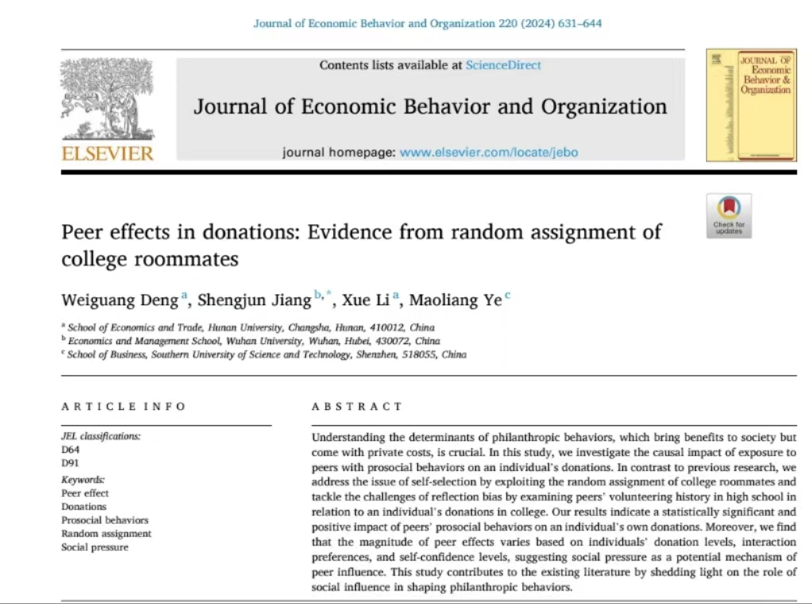

Recently, Associate Professor Ye Maoliang and co-authors Deng Weiguang, Jiang Shengjun, and Li Xue published a paper in the flagship journal of behavioral and organizational economics, the Journal of Economic Behavior and Organization (JEBO). The four authors made equal contributions and are listed in alphabetical order by surname. The paper utilized a natural experiment of randomly allocated university dormitories in China, combined with large-scale survey data collected by the authors, to estimate peer effects in charitable donations. Behavioral economics and its applications in policy and management are core research areas for Professor Ye. With regard to the closely related topics of charity, redistribution, and common prosperity, Professor Ye has accumulated years of research experience and will continue to conduct in-depth research in this area.
Abstract: Understanding the determinants of philanthropic behaviors, which bring benefits to society but come with private costs, is crucial. In this study, we investigate the causal impact of exposure to peers with prosocial behaviors on an individual’s donations. In contrast to previous research, we address the issue of self-selection by exploiting the random assignment of college roommates and tackle the challenges of reflection bias by examining peers’ volunteering history in high school in relation to an individual’s donations in college. Our results indicate a statistically significant and positive impact of peers’ prosocial behaviors on an individual’s own donations. Moreover, we find that the magnitude of peer effects varies based on individuals’ donation levels, interaction preferences, and self-confidence levels, suggesting social pressure as a potential mechanism of peer influence. This study contributes to the existing literature by shedding light on the role of social influence in shaping philanthropic behaviors.
Link: https://authors.elsevier.com/c/1ihOj_3pQ3jXdO
Cite: Weiguang Deng, Shengjun Jiang, Xue Li, Maoliang Ye. “Peer Effects in Donations: Evidence from Random Assignment of Roommates.” Journal of Economic Behavior and Organization, 220 (2024): 631–644.
